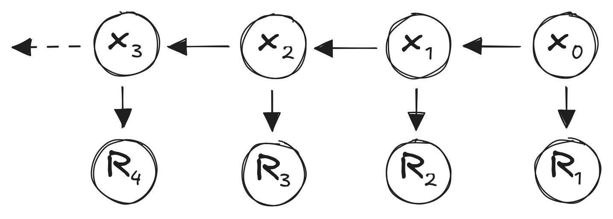
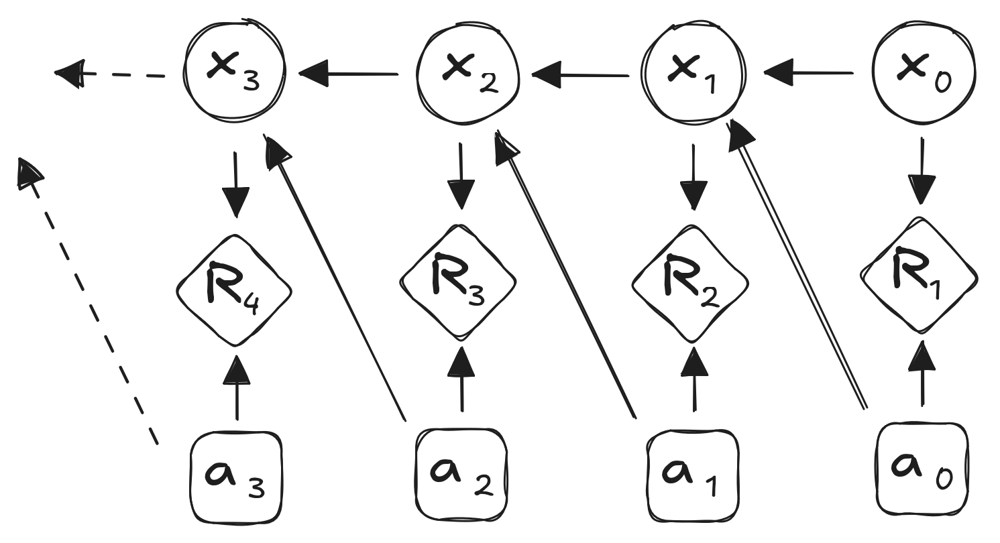

import numpy as np
P = np.array([[0.5, 0.4, 0.1],
[0.3, 0.4, 0.3],
[0.1, 0.7, 0.2]])
x0 = np.array([1, 0, 0])
x1 = x0 @ P
print(x1)[0.5 0.4 0.1]CSCI 4511/6511
Markov property:
\(P(X_{t} | X_{t-1},X_{t-2},...,X_{0}) = P(X_{t} | X_{t-1})\)
“The future only depends on the past through the present.”
Random Walk:
The Same Random Walk:
Stochastic matrix \(P\)
\[ P = \begin{bmatrix} P_{1,1} & \dots & P_{1,n}\\ \vdots & \ddots & \\ P_{n, 1} & & P_{n,n} \end{bmatrix} \]
\(x_{t+1} = x_t P\)
\(x_0 = \begin{bmatrix}1 & 0 & 0\end{bmatrix}\) and \(P = \begin{bmatrix} 0.5 & 0.4 & 0.1 \\ 0.3 & 0.4 & 0.3 \\ 0.1 & 0.7 & 0.2 \end{bmatrix}\)
\(x_{1} = \begin{bmatrix}1 & 0 & 0\end{bmatrix} \begin{bmatrix} 0.5 & 0.4 & 0.1 \\ 0.3 & 0.4 & 0.3 \\ 0.1 & 0.7 & 0.2 \end{bmatrix} = \begin{bmatrix}0.5 & 0.4 & 0.1\end{bmatrix}\)
\(x_{1} = \begin{bmatrix}0.5 & 0.4 & 0.1\end{bmatrix}\)
Probabilities of being in each state: Clear, Clouds, Rain
\(x_{2} = \begin{bmatrix}0.5 & 0.4 & 0.1\end{bmatrix} \begin{bmatrix} 0.5 & 0.4 & 0.1 \\ 0.3 & 0.4 & 0.3 \\ 0.1 & 0.7 & 0.2 \end{bmatrix}\)
\(= \begin{bmatrix}0.38 & 0.43 & 0.35\end{bmatrix}\)
numpy@numpy.matmul\(x_0 P^k\) for large \(k\)
\(\pi = \pi P\)
numpy)\(P^k\)
import numpy as np
P = np.array([[0.5, 0.4, 0.1],
[0.3, 0.4, 0.3],
[0.1, 0.7, 0.2]])
x0 = np.array([1, 0, 0])
print(x0 @ P @ P @ P @ P @ P @ P @ P @ P @ P)
x1 = np.array([0, 1, 0])
print(x1 @ P @ P @ P @ P @ P @ P @ P @ P @ P)[0.32144092 0.46427961 0.21427948]
[0.32142527 0.46428717 0.21428756]Eigenvector
\(P = \begin{bmatrix} 0.5 & 0.3 & 0.1 & 0.1 \\ 0.3 & 0.4 & 0.3 & 0 \\ 0.1 & 0.6 & 0.2 & 0.1 \\ 0 & 0 & 0 & 1 \end{bmatrix}\)
\(P = \begin{bmatrix} 0.5 & 0.3 & 0.2 & 0 & 0 \\ 0.3 & 0.4 & 0.3 & 0 & 0\\ 0.1 & 0.6 & 0.2 & 0.1 & 0 \\ 0 & 0 & 0 & 0.6 & 0.4 \\ 0 & 0 & 0 & 0.3 & 0.7 \end{bmatrix}\)
Gaussian random walk:
\(x_{t+1} = x_t + \mathcal{N}(0,1)\)
\(\mathcal{N}(\mu_a,\sigma_a^2) + \mathcal{N}(\mu_b,\sigma_b^2) = \mathcal{N}(\mu_a + \mu_b,\sigma_a^2 + \sigma_b^2)\)
üòå
Discounting:

\(U_t = \sum_k \gamma^k R_{t+k+1}\)
States: Sales Volume
\(P = \begin{matrix} Low \\ Medium \\ High \end{matrix} \begin{bmatrix} 0.4 & 0.5 & 0.1 \\ 0.2 & 0.6 & 0.2 \\ 0.8 & 0.2 & 0 \end{bmatrix}\)
Rewards:
\(R = \begin{bmatrix} 1 \\ 2.5 \\ 5 \end{bmatrix} \quad \quad \gamma = 0.85\)
Reward for being in state \(x_0 = \begin{bmatrix}0 & 1 & 0\end{bmatrix}\):
\(R_1 = x_0 R = \begin{bmatrix}0 & 1 & 0\end{bmatrix}\begin{bmatrix} 1 \\ 2.5 \\ 5 \end{bmatrix} = 2.5\)
State transition:
\(x_1 = \begin{bmatrix}0 & 1 & 0\end{bmatrix} \begin{bmatrix} 0.4 & 0.5 & 0.1 \\ 0.2 & 0.6 & 0.2 \\ 0.8 & 0.2 & 0 \end{bmatrix} = \begin{bmatrix}0.2 & 0.6 & 0.2\end{bmatrix}\)
\(R_2 = x_1 R = \begin{bmatrix}0.2 & 0.6 & 0.2\end{bmatrix}\begin{bmatrix} 1 \\ 2.5 \\ 5 \end{bmatrix} = 2.7\)
Discounted reward: \(2.7 \cdot \gamma^1 = 2.7\cdot0.85 = 2.295\)
\(U_t = \sum_k \gamma^k R_{t+k+1}\)
\(U(s_t) = E\left[R_{t+1} + \gamma U(s_{t+1})\right]\)
\(U(s) = R_{s} + \gamma \sum\limits_{s' \in S} P_{s,s'} U(s')\)
\(U = R + \gamma P U\)
\((I-\gamma P) U = R\)
\(U = (I-\gamma P)^{-1} R\)

Markov Process:
\(s_{t+1} = s_t P\)
Markov Decision Process (MDP):
\(s_{t+1} = s_t P^a\)
Rewards: \(R^a\) with discount factor \(\gamma\)
Alternatively:
\(P^0 = \begin{matrix} Low \\ Medium \\ High \end{matrix} \begin{bmatrix} 0.4 & 0.5 & 0.1 \\ 0.2 & 0.6 & 0.2 \\ 0.8 & 0.2 & 0 \end{bmatrix} \quad P^1 = \begin{matrix} Low \\ Medium \\ High \end{matrix} \begin{bmatrix} 0.2 & 0.6 & 0.2 \\ 0.1 & 0.6 & 0.3 \\ 0.5 & 0.4 & 0.1 \end{bmatrix}\)
\(R^0 = \begin{bmatrix} 1 \\ 2.5 \\ 5 \end{bmatrix} R^1 = \begin{bmatrix} 0 \\ 1.5 \\ 4 \end{bmatrix} \quad \quad \gamma = 0.85\)
\(\pi(s) = P[A_t = a | s_t = s]\)
State value function \(U^\pi\):1
\(U^\pi(s) = E_\pi[U_t | S_t = s]\)
State-action value function \(Q^\pi\):2
\(Q^\pi(s,a) = E_\pi[U_t | S_t = s, A_t = a]\)
Notation: \(E_\pi\) indicates expected value under policy \(\pi\)
Value function:
\(U^\pi(s) = E_\pi[R_{t+1} + \gamma U^\pi (S_{t+1}) | S_t = s]\)
Action-value fuction:
\(Q^\pi(s, a) = E_\pi[R_{t+1} + \gamma Q^\pi(S_{t+1}, A_{t+1}) | S_t = s, A_t =a]\)
Value function:
\(U^\pi(s) = E_\pi[R_{t+1} + \gamma U^\pi (S_{t+1}) | S_t = s]\)
Action-value fuction:
\(Q^\pi(s, a) = E_\pi[R_{t+1} + \gamma Q^\pi(S_{t+1}, A_{t+1}) | S_t = s, A_t =a]\)

\(U^\pi_1(s) = R(s, \pi(s))\)
\(U^\pi_{k+1}(s) = R(s, \pi(s)) + \gamma \sum \limits_{s^{'}} T(s' | s, \pi(s)) U_k^\pi(s')\)
\(U^\pi = R^\pi + \gamma T^\pi U^\pi\)
\(U^\pi = (I-\gamma T^\pi)^{-1}R^\pi\)
Decision: \[U^*(s) = \max_a Q^*(s,a)\]
Stochastic: \[Q^*(s, a) = R(s, a) + \gamma \sum \limits_{s'} T(s' | s, a) U^*(s')\]
\[U^*(s) = \max_a R(s, a) + \gamma \sum \limits_{s'} T(s' | s, a) U^*(s')\]
\[Q^*(s, a) = R(s, a) + \gamma \sum \limits_{s'} T(s' | s, a) \max_a Q^*(s', a')\]
Iterative Solutions:
Reinforcement Learning
Iteratively, for each algorithm step \(k\):
\(U_{k+1}(s) = \sum \limits_{a \in A}\left(R(s, a) + \gamma \sum \limits_{s'\in S} T(s' | s, a) U_k(s') \right)\)
Algorithm:
Greedy strategy:
\[\pi'(s) = \mathop{\operatorname{arg\,max}}\limits_a Q(s,a)\]
\[\pi(s) = \mathop{\operatorname{arg\,max}}\limits_a Q(s,a)\]
Previous step:
Current step:
Convergence:
Modified Policy Iteration:
Optimality:
Assume:
One-step lookahead:
\[U^*(s) \gets \max \limits_a \left( R(s,a) + \gamma \sum \limits_s' T(s'|s, a) U^*(s') \right)\]
\[U_{k+1}(s) \gets \max \limits_a \left( R(s,a) + \gamma \sum \limits_s' T(s'|s, a) U_k(s') \right)\]
\[U_{k+1}(s) \gets \max \limits_a \left( R(s,a) + \gamma \sum \limits_s' T(s'|s, a) U_k(s') \right)\]
\[U(s) \gets \max \limits_a \left( R(s,a) + \gamma \sum \limits_s' T(s'|s, a) U(s) \right)\]
Richard S. Sutton and Andrew G. Barto. Reinforcement Learning: An Introduction. 2nd Edition, 2018.
Mykal Kochenderfer, Tim Wheeler, and Kyle Wray. Algorithms for Decision Making. 1st Edition, 2022.
John G. Kemeny and J. Laurie Snell, Finite Markov Chains. 1st Edition, 1960.
Stanford CS234 (Emma Brunskill)
UCL Reinforcement Learning (David Silver)
Stanford CS228 (Mykal Kochenderfer)